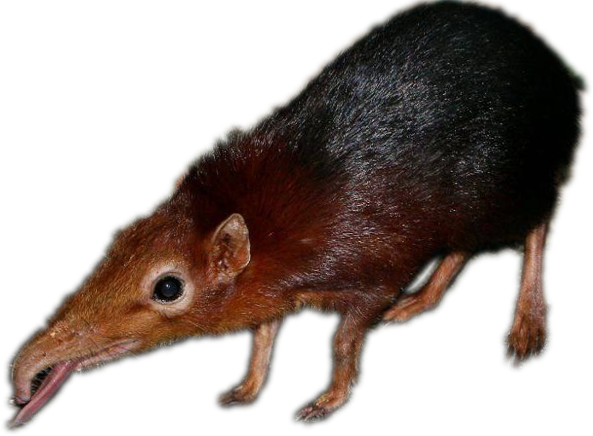

Shlorp GIF Maker
🏠 Home
Create adorable GIFs of your favorite animals shlorping!
Choose an Image
Choose Style:
✨ Classic Wave
🌊 Overlay Wave
💧 Puddle Perspective
Speed (delay per frame ms):
70
Create Shlorp GIF
📥 Download GIF